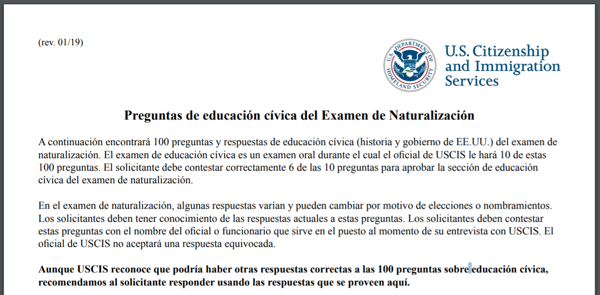
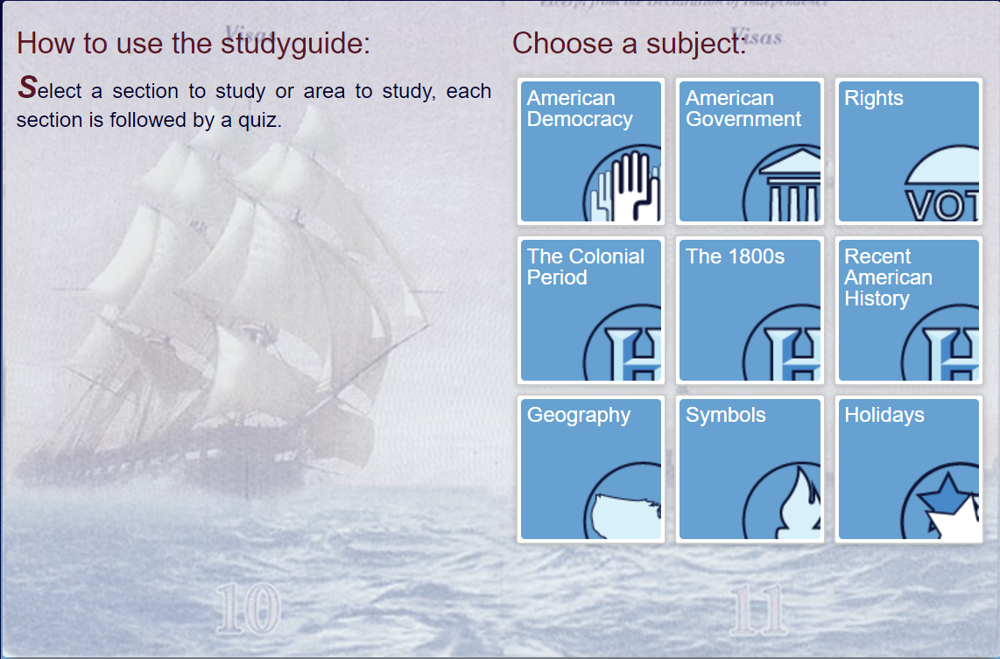

Civics Practice Test

If you are having trouble understanding the questions and nature of the exam you can look at this study guide of the civics test in Spanish.
Preguntas de educación cívica del Examen de Naturalización

Another great website that offers a great study guide for the Civics Test is the US Civis Test Study Guide because it offers specific questions for 9 different topics.This website allows you to practice with Citizenship Test Quizes, Flashcards, Writing Practice, Match up Games, Citizenship Study Guide Questions with Audio, and more. These 9 topics cover all the topics you can be asked in your civics test. The topics are:

1) American Democracy
2) American Governments
3) Rights
4) The Colonial Period
5) The 1800s
6) Recent American History
7) Geography
8) Symbols
9) Holidays
If you are having trouble understanding the questions and nature of the exam you can look at this study guide of the civics test in Spanish.
Preguntas de educación cívica del Examen de Naturalización
Here is a Scratch game to help you practice with real questions in a fun, game-show style way!
Another great website that offers a great study guide for the Civics Test is the US Civis Test Study Guide because it offers specific questions for 9 different topics.This website allows you to practice with Citizenship Test Quizes, Flashcards, Writing Practice, Match up Games, Citizenship Study Guide Questions with Audio, and more. These 9 topics cover all the topics you can be asked in your civics test. The topics are:
2) American Governments
3) Rights
4) The Colonial Period
5) The 1800s
6) Recent American History
7) Geography
8) Symbols
9) Holidays
This is an image of the U.S Citizen and Immigration Services page that offers multiple sets of flashcards in different languages to help you study for The Naturalization Test.
Here is the link

If you find that online reading and practicing is not helping you learn the topics well, there are many books and paper flashcards you can buy. You can find these books in many places like Amazon and Walmart. If you can click on this link you will find an affordable copy of the US Citizenship Test Guide 2019:Civics Test Study Guide for the Naturalization Test: Covers all 100 USCIS Questions and Answers
Here is the link
If you find that online reading and practicing is not helping you learn the topics well, there are many books and paper flashcards you can buy. You can find these books in many places like Amazon and Walmart. If you can click on this link you will find an affordable copy of the US Citizenship Test Guide 2019:Civics Test Study Guide for the Naturalization Test: Covers all 100 USCIS Questions and Answers